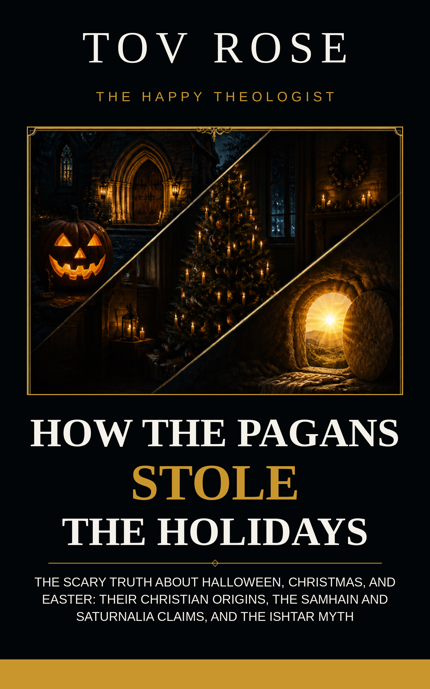

The Scary Truth About Halloween, Christmas, and Easter: Their Christian Origins, the Samhain and Saturnalia Claims, and the Ishtar Myth
The scary truth about Halloween is that it's a Christian holiday in its origins — All Hallows' Eve, the night before All Saints' Day. Tov Rose spent years researching the claims made against Halloween, Christmas, and Easter, holiday by holiday, source by source. This book gathers all of it in one place: every claim checked against the primary sources and against the people who argue the other side.
$14 ebook — EPUB + PDF
Secure checkout via Stripe. After purchase, both editions — EPUB and PDF — are emailed to the address you use at checkout.
If you have ever been the person at church, at work, or at your own front door who didn't know what to say when someone called these holidays pagan — this book was written for you.
A note for earlier readers: this book recompiles and corrects Tov's earlier holiday titles. If you bought one of them, the corrected edition is yours free — just reply to your original receipt email.
Join the C2R Leads list for new chapters, holiday-season evidence posts, and word when the audiobook edition arrives. Double opt-in — we only email you after you confirm.
Tov Rose is the translator of the New Messianic Version of the Bible and the author of The Scary Truth About Christmas and years of holiday-origins research published at The Happy Theologist.